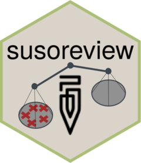

Function reference
-
extract_attribute() - Extract attributes from variables in microdata
-
create_attribute() - Create attribute from one or more variable in microdata
-
count_vars() - Count columns with value in microdata
-
count_list() - Count the non-missing elements of a list variable
-
any_vars() - Create attribute about whether any variable contains a specific value
-
count_obs() - Count the number of observations where a condition is
TRUE.
-
any_obs() - Determine whether where a condition is
TRUEfor any observation.
-
sum_vals() - Sum the values of a variable across records constituting a household observation
-
create_issue() - Create an issue from one or more attributes in attribute data
-
make_issue() - Make an issue from values in household-level microdata
-
make_issue_in_roster() - Make issue from values in roster-level microdata
-
add_issue_if_unanswered() - Add an issue for interviews that have too many questions left unanswered
-
add_issues_for_suso_errors() - Add an issue for each SuSo validation error
-
check_for_comments() - Determine whether interviews contain comments relevant to the rejection decision.
-
decide_action() - Decide how to handle interviews: reject, review, or approve
-
flag_persistent_issues() - Flag persistant issues
-
add_rejection_msgs() - Add consolidated rejection message to data frame of interviews to reject
-
post_comments() - Post comments to questions, if any
-
reject_interview() - Reject interview using the appropriate set of rejection API calls
-
approve_interview() - Approve interviews using the appropriate set of API calls